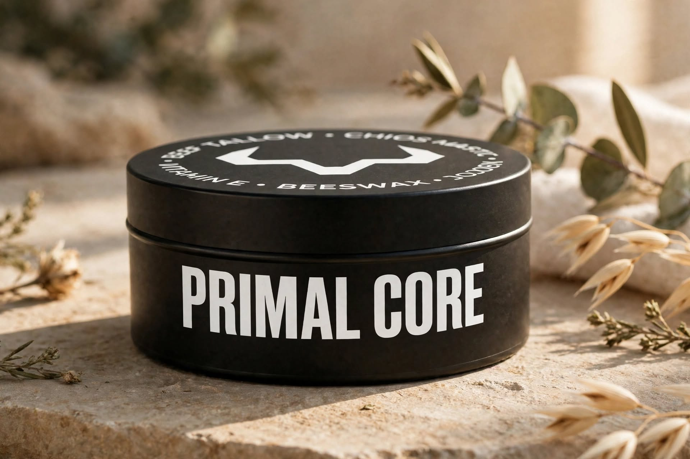

Η γνώση πίσω από την απλότητα.

Ξηρά χέρια και τραχείς αγκώνες: φροντίδα χωρίς υπερβολές

Συστατικά PRIMAL CORE: τι γνωρίζουμε και τι μένει να επιβεβαιωθεί

Βόειο στέαρ για το πρόσωπο: οδηγός για το tallow balm

Balm μετά το ξύρισμα: πώς επιλέγεις και τι να προσέξεις

Μαστιχέλαιο Χίου στην περιποίηση: άρωμα, προέλευση και σωστές προσδοκίες

Μαστίχα Χίου: Το φυσικό συστατικό με 2.500 χρόνια ιστορίας που επιστρέφει στην περιποίηση του προσώπου

Από τον Ιπποκράτη στο PRIMAL CORE: Η Ξεχασμένη Ιστορία του Βόειου Στέαρ και της Μαστίχας Χίου στην Αρχαία Ελλάδα

Τι είναι το βόειο λίπος (beef tallow);

Η Επιστήμη Πίσω από το Beef Tallow: Λιπαρά Οξέα, Βιταμίνες και Περιποίηση της Επιδερμίδας

Γιατί το Beef Tallow γίνεται μία από τις πιο πολυσυζητημένες τάσεις στην περιποίηση προσώπου το 2026

Beef Tallow: Η επιστροφή στις ρίζες της περιποίησης

Beef Tallow στο Πρόσωπο: Είναι Ασφαλές και Πώς Χρησιμοποιείται;